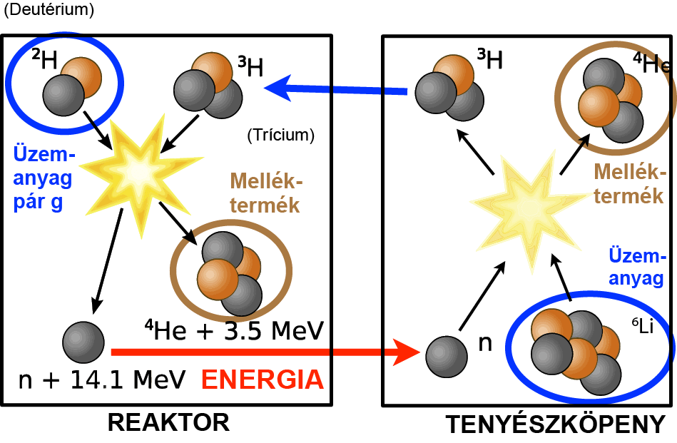

Zeller András Marcell-Portfólió
Kezdőlap
Rólam
Elérhetőségek
Projektmunkák
Fúziós erőmű
Mint az köztudott, a Fúziós erőmű jóval több energiát termel, mint az Atom erőmű, mindezt úgy, hogy sugárzó hulladék nem keletkezik.
 zotópja,
a vízből viszonylag egyszerűen kivonható. A lítiumot besugárzással
tríciumra bontják, ez is egy hidrogénizotóp. A tórusz
formájú reaktorkamrába a trícium és a deutérium keverékét juttatják be.
100-150 millió °C-ra hevítik és az így
keletkező ionokat körpályára kényszerítik mágneses térrel. A reakcióban
hélium keletkezik, ami a légkörben is előforduló semleges,
nem sugárzó gáz. Egy időben kb. 5 gramm üzemanyag van a
reaktorkamrában, így még ha megsérülne is a kamra,
különösebb környezeti sugárterheléssel nem kell számolni. A reaktor
fala bórral ötvözött acél. Azért van benne bór,
mert az jól befogja a reakció közben keletkező neutronokat, és így
megakadályozza, hogy a környezetbe kikerüljenek. A
reaktor falát folyékony fémmel tervezik hűteni. Az így elvezetendő
hővel turbinákat hajtanak meg. A turbina villamos generátort működtet,
amivel a villamos hálózatba
lehet táplálni az áramot.
zotópja,
a vízből viszonylag egyszerűen kivonható. A lítiumot besugárzással
tríciumra bontják, ez is egy hidrogénizotóp. A tórusz
formájú reaktorkamrába a trícium és a deutérium keverékét juttatják be.
100-150 millió °C-ra hevítik és az így
keletkező ionokat körpályára kényszerítik mágneses térrel. A reakcióban
hélium keletkezik, ami a légkörben is előforduló semleges,
nem sugárzó gáz. Egy időben kb. 5 gramm üzemanyag van a
reaktorkamrában, így még ha megsérülne is a kamra,
különösebb környezeti sugárterheléssel nem kell számolni. A reaktor
fala bórral ötvözött acél. Azért van benne bór,
mert az jól befogja a reakció közben keletkező neutronokat, és így
megakadályozza, hogy a környezetbe kikerüljenek. A
reaktor falát folyékony fémmel tervezik hűteni. Az így elvezetendő
hővel turbinákat hajtanak meg. A turbina villamos generátort működtet,
amivel a villamos hálózatba
lehet táplálni az áramot.
Alternatív üzemanyagok
 Ebben
a projektben a benzint és a gázolajat kiváltó üzemanyagokat kutattuk,
vizsgáltuk. Természetesen végigmentük a jelenleg is létező
alternatívákon is, gondolok itt a gázhajtásra, a bioetanolra és a
hidrogén
hajtásra.
Ebben
a projektben a benzint és a gázolajat kiváltó üzemanyagokat kutattuk,
vizsgáltuk. Természetesen végigmentük a jelenleg is létező
alternatívákon is, gondolok itt a gázhajtásra, a bioetanolra és a
hidrogén
hajtásra.
Sok alternatíva felötlik az emberben. Némi kreativitással bárki elő tud állni egy őrült ötlettel, de ez nem azt jelenti hogy az használható is. A projekt során a legfontosabb szempontoka a következők voltak:
- Olcsó előállíthatóság
- Környezetkárosító hatás minimalizálása
- Jó energiahordozó legyen
Összességében elmondható, hogy az eredmények nem lettek meglepőek. A fosszilis tüzelőanyagok a nagy energiasűrűség miatt valóban jó üzemanyagok, és nehéz őket felül múlni. A bioetanol jól megközelíti, olcsó az előállítása, viszont a hideget nem viseli elég jól, úgyhogy ezt a forró éghajlatra javasoljuk.
Volt még egy elvetemült
ötlet, miszerint szereljünk minden autóba egy hidegfúziós motort, ez
azonban a hidegfúzió megvalósítási nehézségei miatt még várat magára :)
Űrutazás
Jelenleg is több alternatíva létzik az űrrakéták meghajtására. De kivétel nélkül egy törvényre építkeznek, az erő-ellenerő törvényére. A mi ötletünk az volt, hogy ezt ez felejtsük el és nézzünk alternatív meghajtási mód után.
Természetesen A légkörből való kijutáshoz, azaz az 1. kozmikus sebesség eléréséhez ez a meghajtási módszer fog kelleni, azonban már ehhez is rengeteg üzemanyagra van szükség és még szó sem esett a Föld gravitációs vonzásából való kiszakadásról, ami a 2. kozmikus sebesség. Tehát ahhoz, hogy utazzunk szabadon az űrben, elképesztő mennyiséget kéne magunkal vinnénk a jelenleg használatos üzemanyagokból. Azonban a készletek végesek, arról nem is beszélve, hogy ez mekkora többlet tömeg, amit szintén fel kell gyorsítani.
Ennek fényében az ötlet az volt, hogy találjunk egy módszert, mellyel nagy sebességet tudunk elérni, többlet tömeg felhalmozása nélkül. Ekkor támadt az ötlet, hogy miért ne használnánk ki azt, ami már eleve ott van a világűrben, a sugárzást. Ha páldául a Naptól távolodni akarunk, a Napszélnél nagyobb erőt keresve sem találnánk. Ha más irányt vennénk, akkor más irányból érkező háttérsugárzást befogva szintén utazhatunk. Innentől kezdve úgy kell az űrhajókra tekinteni, mint vitorlásokra.
Ezt az ötletet továbbgondolva megalkottuk a Napvitorlást. Ez egy olyan űrjármű, mely miután kiért a légkörből, kinyit egy hatalmas napvitorlát, mely a fényt tökéletesen visszaveri, ezáltal a sugárzás gyorsítja magát a járművet energiabefektetés nélkül. A vitorla egy több 10 négyzetméteres műanyag fólia fémmel bevonva és kellően kifeszítve.
Hátránya, hogy a gyorsulás nagyon kis mértékű, viszont állandó, azonban egy külső erős lézerrel megvilágítva a gyorsulás növelhető. Továbbá fontos, hogy ez az eszköz csak légkörön kívül használható.